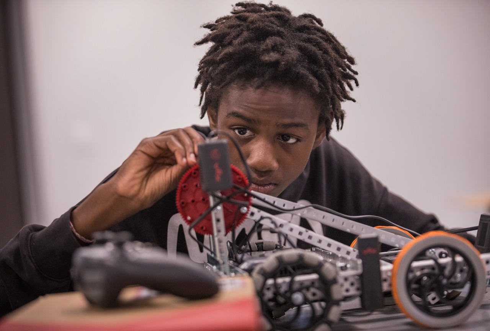

Health IT
Cybersecurity
Networking

I’m a junior majoring in Computer Information Systems at the UofSC Honors College. As a DoD Cyber Service Academy Scholar, I’m passionate about healthcare IT, cybersecurity, and computer networking. With hands-on experience in network operations, IT support, and cybersecurity research, I have worked as a Network Operator for the past two years troubleshooting enterprise infrastructure and enforcing security policies. As an IT Service Technician, I resolved 300+ support tickets. I also develop context-aware multifactor authentication solutions through research.
My passion for healthcare combined with my expertise in IT, networking, and cybersecurity have prepared for a future in health care IT. I plan to delve into this through grad school and later professionaly.
xx Madeleine

Explore my work configuring switches, repairing access points, and managing RMA inventory at UofSC's Division of IT.
Visit Networking
This NSA-funded research project focuses on designing and simulating secure multifactor authentication systems using OWL, SWRL, SQL, and more.
Visit ResearchStarted my undergraduate studies at the University of South Carolina.
Begun working as an IT Service Technician for the USC Division of IT.
Started working as a Network Operator for the USC Division of IT.
Became a VICEROY DECREE Scholar.
Accepted as a DoD CSA scholar through the Naval Information Warfare Center.
Worked as a Cybersecurity Youth Instructor for Trident Technical College.
Started multifactor authentication research with Dr. Farkas.

I was recently featured in a UofSC Honors College spotlight highlighting my journey in engineering, cybersecurity, and leadership as a DoD Cyber Service Academy Scholar.
Read the full article ↗
I was honored to be featured by the College of Engineering and Computing as a model student for CIS. I shared how I blended tech and healthcare, and what drives my passion for IT infrastructure.
Read the post ↗
I had the opportunity to speak to Honors College students about the DoD Cyber Scholarship Program. I shared my experience and the doors it’s opened in research and cybersecurity.
View the LinkedIn post ↗